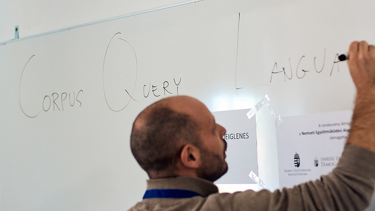

BOLG
„Bolgok, akik programoznak, mert teremtenek valamit,
ami egyszercsak életre kel és működik.”
Mt 5,1-10
← előző: bemutatkozás |
következő: Közép-Európa, hazám →
Keresés korpuszban kurzus – 2018. december 1.

Régóta foglalkozom nagy méretű szöveggyűjteményekben,
szövegkorpuszokban való nyelvészeti szempontú kereséssel.
Részt vettem
több korpusz illetve korpuszlekérdező felület kialakításában.
Az elmúlt években többször, több formában tartottam
korpuszban való keresésről szóló előadást, kurzust.
6×90 perces időkerettel számolva
a kikristályosodott tematika a közvetkező:
-
A NoSketchEngine korpuszkezelő rendszer felülete és funkciói.
Elemzetlen korpusz:
a Magyar történeti szövegtár.
Korpusz, token, annotáció, metaadat.
Szűrés és gyakorisági lista.
Reguláris kifejezések.
-
Corpus Query Language (CQL).
A tanultakat alkalmazó összetett példalekérdezés.
-
További példák.
Elemzett korpusz:
Magyar Nemzeti Szövegtár.
Attribútumok, részletes keresés (magyar morfológia és fonológia).
-
„Automatikus” versírás.
Mazsola korpuszlekérdező:
igék és bővítmények vizsgálata.
Ómagyar korpusz.
A Budapesti Szociolingvisztikai Interjú (BUSZI)
lejegyzett anyagának korpusza.
-
A korpuszkeresés elvei.
Az MNSZ2 logból származó valódi lekérdezések elemzése.
-
Feladatok és megoldások megbeszélése.
A kurzus alapos tudásanyagot nyújt
a korpuszalapú és korpuszvezérelt nyelvészeti kutatás
módszereiről és átfogó gyakorlati eszközöket ad a hallgatóság kezébe.
Igény esetén szívesen vállalom a fenti kurzus megtartását.
Díjazás: megbeszélés szerint,
kb. 20000 + 2500 · x2 Ft, ha 0 ≤ x ≤ 2 és
15000 · x Ft, ha 2 ≤ x, ahol x
a megtartott 90 perces órák száma.
Célközönség:
magyar, elméleti nyelvészet, alkalmazott nyelvészet
és más hasonló szakosok (harmadévtől PhD-ig).
Előfeltétel: legalább középfokú magyar nyelvtudás,
alapvető általános nyelvészeti és magyar nyelvészeti tájékozottság.
Kontakt: sass.balint kukac nytud.mta.hu
Referenciák:
-
Varsói Egyetem, BA, magyar szak,
önálló kurzus
– 2018. november (6×90 percben)
-
SZTE JGYPK, Szeged,
„Beszéd- és nyelvelemző szoftverek...”
workshop
– 2018. október (1×45 percben)
-
ELTE BTK, MA/PhD, Számítógépes nyelvészet tárgy keretében
– 2018. május (1×90 percben)
-
PPKE ITK, MSc, Nyelvtechnológia tárgy keretében
– 2018. május (1×90 percben)
-
ELTE BTK, PhD / Alkalmazott nyelvészet, Kutatásmódszertan tárgy keretében
– 2018. tavasz (2×90 percben)
-
ELTE BTK, PhD / Magyar nyelvészet, Kutatásmódszertan tárgy keretében
– 2018. február (2×90 percben)
-
MTA NYTI, az intézet munkatársai számára
– 2016. június (1×90 percben)
-
PPKE ITK, MSc, Nyelvtechnológia tárgy keretében
– 2016. május (1×90 percben)
-
ELTE BTK, MA, Korpusznyelvészet tárgy keretében
– 2016. április (1×90 percben)
Az említett korpuszok elérhetők a
Nemzeti Korpuszportálról.
Olvasnivaló: Nyelvészeti szövegkeresők, Nemzeti Korpuszportál,
Keresés korpuszban: a kibővített Magyar történeti szövegtár új keresőfelülete.